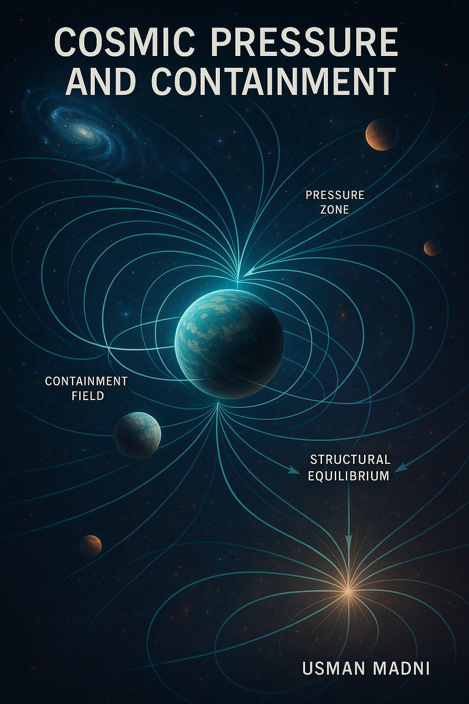
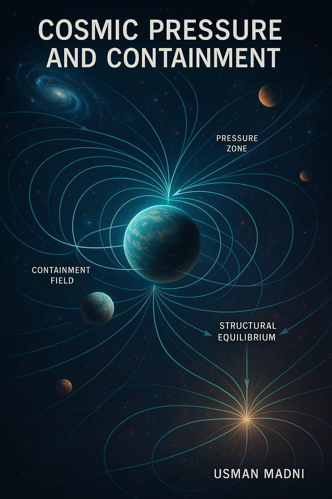

الملخص
يقدم هذا المقال نظرية "الضغط والاحتواء الكوني" (CPC) التي تفترض أن الكون يحافظ على توازنه من خلال ضغط داخلي مقابل احتواء خارجي. هذا النموذج يتحدى الاعتماد الحصري على الجاذبية ويفسر التوسع الكوني واستقراره عبر آليات الضغط.
١. المقدمة
تعتمد الكوزمولوجيا الحديثة على الجاذبية لشرح بنية الكون، لكن ظواهر مثل التوسع المتسارع واستقرار البنى تدعو لنموذج بديل. CPC يقترح أن الضغط هو القوة المسيطرة المتوازنة مع الاحتواء.
٢. عشرة أدلة علمية تؤيد نظرية CPC
- توسع الكون: يدل على وجود ضغط داخلي بدلاً من الجاذبية فقط.
- استقرار الكونية: وجود توازن مستمر يشير إلى آلية احتواء.
- الثقوب السوداء: وجود حد أقصى يدل على مقاومة ضغطية للتمدد المطلق.
- إشعاع الخلفية الكونية: تماثله يدل على ضغط موحد.
- اختلال المادة/المادة المضادة: قد يعكس تدخلًا احتوائيًا.
- ضغط الفراغ الكمومي: يؤكده تأثير كازيمير.
- قصور الجاذبية: فشل التوحيد مع ميكانيكا الكم.
- حدود الكون: تتطلب احتواءً يفرض التوازن.
- التشبيه المعماري: يشبه الكون فقاعة مضغوطة.
- أنظمة الضغط في الطبيعة: كالدماغ والبحار.
٣. انفجار كوني محتمل
إذا زاد الضغط الداخلي عن قدرة الاحتواء، قد يحدث انفجار كوني شامل.
٤. أول تأثير: المحيطات
المياه غير قابلة للانضغاط، لذا ستكون أول من يتأثر بهذا التغيير الكوني العنيف.
٥. الأجسام المعلقة في الفضاء
لا تبقى معلقة بسبب الجاذبية فقط، بل بتوازن الضغط والاحتواء.
٦. تأثير الضغط على الضوء
يؤثر على سرعة الضوء ويقدم تفسيرًا بديلًا للانزياح الأحمر.
٧. المعادلات النظرية
- التوازن: Pi × A = Fc × A ⇒ Pi = Fc
- الضغط المداري: Pr(r) = P₀ / (1 + k r²)
- الانزياح الأحمر: Δλ ∝ ∇P · d
٨. قصور النماذج التقليدية
- النسبية العامة: تعتمد على طاقة مظلمة غير مؤكدة.
- الجاذبية النيوتونية: تفشل على نطاق كوني.
- الطاقة المظلمة: فرضية بدون تجربة.
- نظرية الأوتار: معقدة وغير مثبتة.
٩. مزايا نموذج CPC
- يفسر التوسع بدون طاقة مظلمة.
- نموذج خالٍ من التفردات.
- يعتمد على مفاهيم فيزيائية واقعية.
١٠. الخاتمة
نظرية CPC تفتح بابًا لفهم جديد لبنية واستقرار الكون، وتقدم بديلاً علميًا قابلًا للبحث والتجريب.
١١. المراجع
- Misner, Thorne, Wheeler. Gravitation (1973).
- Padmanabhan. Structure Formation in the Universe (1993).
- Peebles. Physical Cosmology (1993).
- Riess et al. Supernovae & Accelerating Universe (1998).
- Verlinde. Emergent Gravity (2017).
- Zee. QFT in a Nutshell (2010).
- Weinberg. Gravitation and Cosmology (1972).
١٢. الصور التوضيحية


 

© 2025 عثمان مدني — جميع الحقوق محفوظة